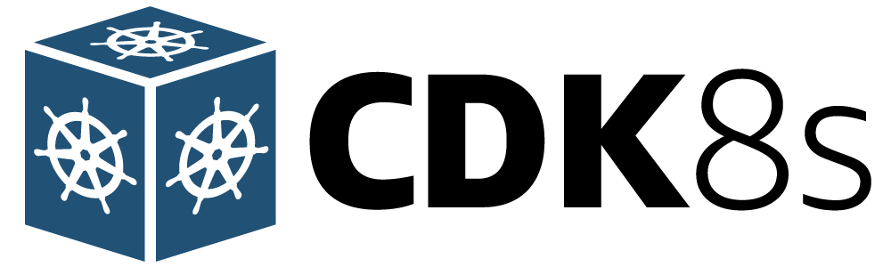

cdk8s-plus in action!

The previous chapter covered how to get started with cdk8s (Cloud Development Kit for Kubernetes), that is an an open-source framework (part of CNCF) using which you can define your Kubernetes applications using regular programming languages (instead of yaml).
You were able to setup a simple nginx Deployment and accessed it via a Service - all this was done using Go, which was then converted to yaml (using cdk8s synth) and submitted to the cluster using kubectl. This was a good start. However, since the core cdk8s library is pretty low-level (for a good reason!) the code involved lot of boilerplate (you can refer to the code here).
cdk8s-plus leverages building blocks from cdk8s core library, thereby helping reduce verbosity and complexity by providing higher level abstractions/APIs for all Kubernetes objects such as Deployments, Services, etc. In this chapter, we will see cdk8s-plus in action and even deploy Wordpress on Kubernetes with it!
Let's start by revamping the Nginx deployment..
To witness how cdk8s-plus works, it's best to look at the code.
It is available on Github.
I will walk you through the code as we go along.
func NewNginxChart(scope constructs.Construct, id string, props *NginxChartProps) cdk8s.Chart {
var cprops cdk8s.ChartProps
if props != nil {
cprops = props.ChartProps
}
chart := cdk8s.NewChart(scope, jsii.String(id), &cprops)
dep := cdk8splus22.NewDeployment(chart, jsii.String("deployment"), &cdk8splus22.DeploymentProps{Metadata: &cdk8s.ApiObjectMetadata{Name: jsii.String("nginx-deployment-cdk8s-plus")}})
dep.AddContainer(&cdk8splus22.ContainerProps{
Name: jsii.String("nginx-container"),
Image: jsii.String("nginx"),
Port: jsii.Number(80)})
dep.ExposeViaService(&cdk8splus22.DeploymentExposeViaServiceOptions{
Name: jsii.String("nginx-container-service"),
ServiceType: cdk8splus22.ServiceType_LOAD_BALANCER,
Ports: &[]*cdk8splus22.ServicePort{{Port: jsii.Number(9090), TargetPort: jsii.Number(80)}}})
return chart
}
We start by creating a Deployment, then add a container and finally expose it using a Service. This is quite intuitive and user-friendly.
The container details could have been provided via DeploymentProps but using
AddContainerseemed more natural (at least to me).
To generate Kubernetes manifest, simply run cdk8s synth. This will generate a yaml in the dist folder. Here is an example (some of the names, labels etc. will be different in your case):
apiVersion: apps/v1
kind: Deployment
metadata:
name: nginx-deployment-cdk8s-plus
spec:
minReadySeconds: 0
progressDeadlineSeconds: 600
replicas: 1
selector:
matchLabels:
cdk8s.io/metadata.addr: nginx-cdk8s-plus-deployment-c84b388e
strategy:
rollingUpdate:
maxSurge: 25%
maxUnavailable: 25%
type: RollingUpdate
template:
metadata:
labels:
cdk8s.io/metadata.addr: nginx-cdk8s-plus-deployment-c84b388e
spec:
automountServiceAccountToken: true
containers:
- image: nginx
imagePullPolicy: Always
name: nginx-container
ports:
- containerPort: 80
securityContext:
privileged: false
readOnlyRootFilesystem: false
runAsNonRoot: false
dnsPolicy: ClusterFirst
securityContext:
fsGroupChangePolicy: Always
runAsNonRoot: false
setHostnameAsFQDN: false
---
apiVersion: v1
kind: Service
metadata:
name: nginx-container-service
spec:
externalIPs: []
ports:
- port: 9090
targetPort: 80
selector:
cdk8s.io/metadata.addr: nginx-cdk8s-plus-deployment-c84b388e
type: LoadBalancer
Both the
DeploymentandServiceare present in the same manifest, since they were declared in the sameChart.
It's worth noting that there was no need to specify any Pod label selectors, template labels (in Deployment code) or Service selector. cdk8s-plus took care of it by auto-generating cdk8s.io/metadata.addr: nginx-cdk8s-plus-deployment-c84b388e, which was used in spec.selector.matchLabels and spec.template.metadata.labels, along with the Service selector in nginx-container-service
A note on dependencies
go.mod lists all the modules:
require (
github.com/aws/constructs-go/constructs/v10 v10.1.42
github.com/aws/jsii-runtime-go v1.61.0
github.com/cdk8s-team/cdk8s-core-go/cdk8s/v2 v2.3.31
github.com/cdk8s-team/cdk8s-plus-go/cdk8splus22/v2 v2.0.0-rc.23
)
Note that we are using cdk8splus22. The reason for this naming convention is because each cdk8s-plus library is separately vended to target a specific Kubernetes version - the 22 at the end signifies that this dependency will work with Kubernetes 1.22
I would recommend reading the FAQs to get further clarity
To test this locally...
... you can use minikube, kind, etc.
git clone https://github.com/abhirockzz/cdk8s-for-go-developers
cd part2-cdk8s-plus-in-action/nginx-example
# make sure cluster is running
minikube start
# create the resources
kubectl apply -f dist/
kubectl get pods -w
Once Pod is running, check the Service:
kubectl get svc
In a terminal, run this command (it runs as a separate process):
minikube tunnel
To access the nginx server, navigate to the external IP (as per the Service). In the case of minikube, you can simply use localhost:9090 or 127.0.0.0:9090
How about a Wordpress installation on Kubernetes?
I like this example - it's not overly complex but realistic enough because it has multiple moving parts that includes a combination of stateless, stateful components, different kinds of services etc.
This chapter is not a deep dive into
Wordpressand loosely inspired by this article in the Kubernetes documentation, which I assume folks might be familiar with.
The main function will give you a sense of what lies ahead:
func main() {
app := cdk8s.NewApp(nil)
mySQLChart := NewMySQLChart(app, "mysql", nil)
wordpressChart := NewWordpressChart(app, "wordpress", nil)
wordpressChart.AddDependency(mySQLChart)
app.Synth()
}
So far, we have dealt with a single chart. Our Wordpress cdk8s application has two separate charts - one for MySQL database and the other one for Wordpress. This will result in two different manifests being created as a result of cdk8s synth process.
Let's look the MySQL chart first
some code has been omitted for brevity
We start by defining a Kubernetes Secret to store MySQL password (with NewSecret):
func NewMySQLChart(scope constructs.Construct, id string, props *MyChartProps) cdk8s.Chart {
//....
secretName := "mysql-pass"
password := "Password123"
mysqlSecret := cdk8splus22.NewSecret(chart, jsii.String("mysql-secret"),
&cdk8splus22.SecretProps{
Metadata: &cdk8s.ApiObjectMetadata{Name: jsii.String(secretName)}})
secretKey := "password"
mysqlSecret.AddStringData(jsii.String(secretKey), jsii.String(password))
MySQL password has been declared in the code - not a best practice by any means, just for demo. Do not do this in production!
Then we create the Deployment and provide container details. Notice how the Secret has been added as an environment variable to the container:
- First we got an EnvValue using EnvValue_FromSecretValue
- That was added to the container using Env#AddVariable
dep := cdk8splus22.NewDeployment(chart, jsii.String("mysql-deployment-cdk8splus"), &cdk8splus22.DeploymentProps{})
containerImage := "mysql"
mysqlContainer := dep.AddContainer(&cdk8splus22.ContainerProps{
Name: jsii.String("mysql-container"),
Image: jsii.String(containerImage),
Port: jsii.Number(3306),
})
envValFromSecret := cdk8splus22.EnvValue_FromSecretValue(&cdk8splus22.SecretValue{Key: jsii.String(secretKey), Secret: mysqlSecret}, &cdk8splus22.EnvValueFromSecretOptions{Optional: jsii.Bool(false)})
mySQLPasswordEnvName := "MYSQL_ROOT_PASSWORD"
mysqlContainer.Env().AddVariable(jsii.String(mySQLPasswordEnvName), envValFromSecret)
For durable storage, we create a PersistentVolumeClaim, use that to define a Volume and mount in onto the container at the path /var/lib/mysql.
mysqlPVC := cdk8splus22.NewPersistentVolumeClaim(chart, jsii.String("mysql-pvc"), &cdk8splus22.PersistentVolumeClaimProps{
AccessModes: &[]cdk8splus22.PersistentVolumeAccessMode{cdk8splus22.PersistentVolumeAccessMode_READ_WRITE_ONCE},
Storage: cdk8s.Size_Gibibytes(jsii.Number(2))})
mysqlVolumeName := "mysql-persistent-storage"
mysqlVolume := cdk8splus22.Volume_FromPersistentVolumeClaim(chart, jsii.String("mysql-vol-pvc"), mysqlPVC, &cdk8splus22.PersistentVolumeClaimVolumeOptions{Name: jsii.String(mysqlVolumeName)})
mySQLVolumeMountPath := "/var/lib/mysql"
mysqlContainer.Mount(jsii.String(mySQLVolumeMountPath), mysqlVolume, &cdk8splus22.MountOptions{})
Finally, we create a Service:
mySQLServiceName := "mysql-service"
clusterIPNone := "None"
cdk8splus22.NewService(chart, jsii.String("mysql-service"), &cdk8splus22.ServiceProps{
Metadata: &cdk8s.ApiObjectMetadata{Name: jsii.String(mySQLServiceName)},
Selector: dep,
ClusterIP: jsii.String(clusterIPNone),
Ports: &[]*cdk8splus22.ServicePort{{Port: jsii.Number(3306)}},
})
Unlike previous example, we create a
Serviceexplicitly and then refer toDeploymentobject in the service selector.
Wordpress Chart - Except for minor differences, it's the same as the MySQL chart with Wordpress specific configuration obviously. So I won't repeat it here - feel free to explore the code.
The moment of truth is here!
Rinse and repeat - cdk8s synth to create the manifest and apply it with kubectl:
cd part2-cdk8s-plus-in-action/wordpress
#create manifests
cdk8s synth
#apply them
kubectl apply -f dist/
#output - you will see something similar to:
secret/mysql-pass created
deployment.apps/mysql-mysql-deployment-cdk8splus-c83762d9 created
persistentvolumeclaim/mysql-mysql-pvc-c8799bba created
service/mysql-service created
deployment.apps/wordpress-wordpress-deployment-cdk8splus-c8252da7 created
service/wordpress-service created
persistentvolumeclaim/wordpress-wordpress-pvc-c8334a29 created
In a different terminal run (if not already running):
minikube tunnel
Use your browser to navigate to http://localhost:80. You should see the familiar Wordpress installation screen.
Go ahead, finish the installation and log into your Wordpress instance. Feel free to experiment. Maybe try deleting the MySQL deployment and re-creating it. Thanks to the PersistentVolume, MySQL data should be recovered and wordpress will continue to work.
Conclusion
Awesome! In this chapter you saw the expressiveness of cdk8s-plus. We started off with a compact and less verbose version of the Nginx deployment and ended up with a full-fledged Wordpress instance - all using Go.